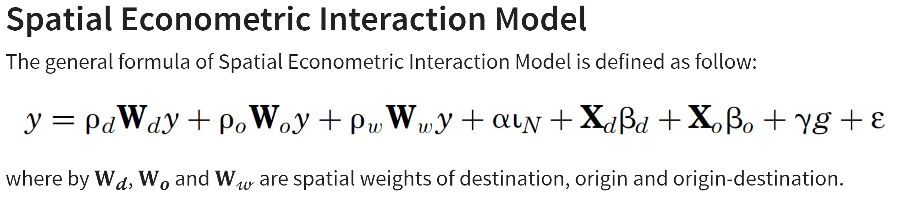
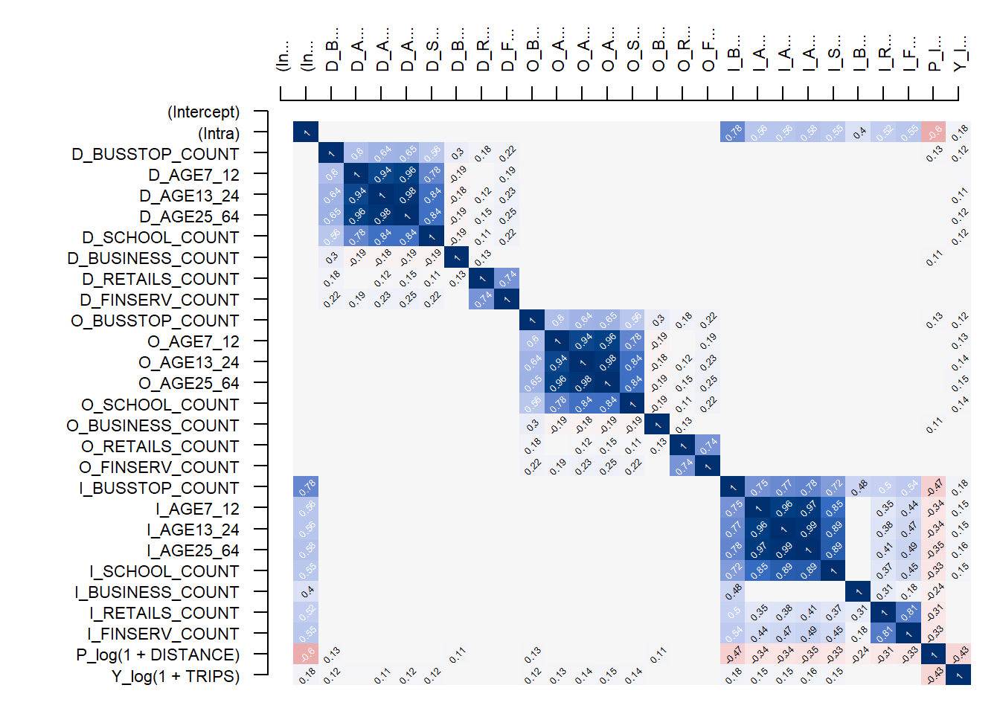
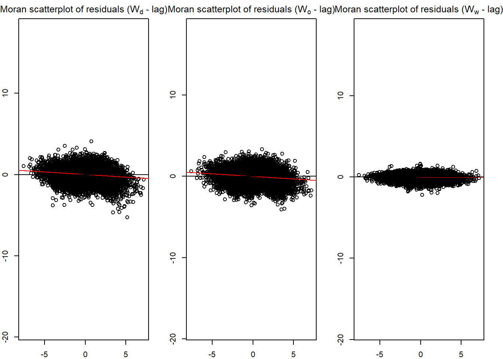
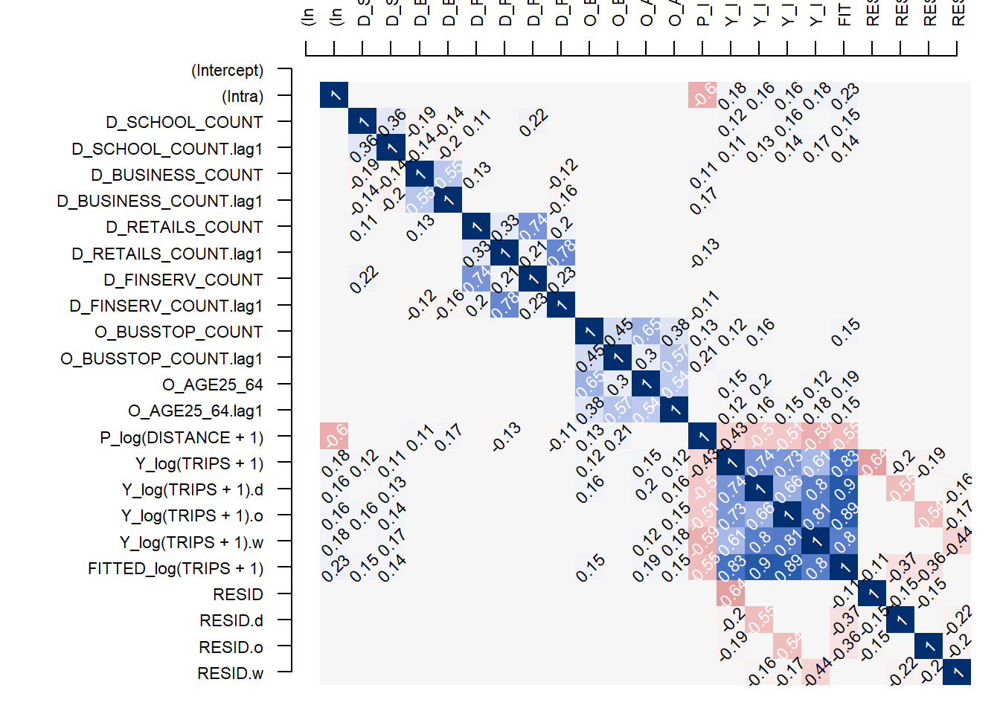
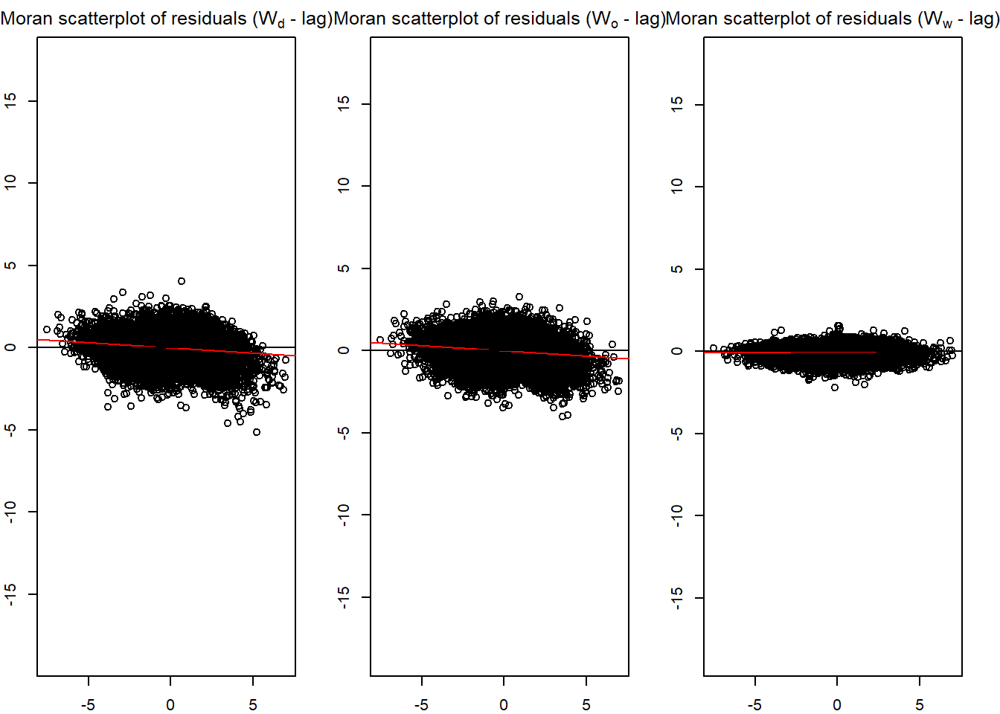

devtools::install_github("LukeCe/spflow")In Class Ex 5
Spatial Econometrics Interaction Modelling

Due to the limitations of the Spatial Interaction Models - we will look at the Spatial Econometrics Interaction Model.
Here - we will add on a weight to the SIM that we have previously developed. (Specific for Origin-Destination Flows)
Note
This can be applied to beyond just OD flow.
Preparation
Packages
New package that we will be using - spflow. To install the latest version instead of the published one:
pacman::p_load(tmap, sf, spdep, sp, Matrix,
reshape2, tidyverse, spflow)Efficient estimation of spatial econometric models of origin-destination flows, which may exhibit spatial autocorrelation in the dependent variable, the explanatory variables or both. The model is the one proposed by LeSage and Pace (2008), who develop a matrix formulation that exploits the relational structure of flow data. The estimation procedures follow most closely those outlined by Dargel (2021).
Data
How the Data was Prepared
To add on later.
Reading the Data Prepared by Prof
Preparing the Data for SEIM
mpsz_nb -> this will give the Weights in the formula
mpsz_flow -> flow data
Mpsz_var -> the explanatory variables
mpsz_flow <- read_rds("data/rds/mpsz_flow.rds")
mpsz_nb <- read_rds("data/rds/mpsz_nb.rds")
mpsz_var <- read_rds("data/rds/mpsz_var.rds")Creating the spflow_network_class Objects
To describe the nodes of a network the package provides spflow_network-class that combines attributes of the nodes with the chosen network structure.
For our model we choose the contiguity based neighborhood structure.
Should not use by distance. Why?
mpsz_net <- spflow_network(
id_net = "sg",
node_neighborhood = nb2mat(mpsz_nb$by_contiguity),
node_data = mpsz_var,
node_key_column = "SZ_CODE")
mpsz_netSpatial network nodes with id: sg
--------------------------------------------------
Number of nodes: 313
Average number of links per node: 6.077
Density of the neighborhood matrix: 1.94% (non-zero connections)
Data on nodes:
SZ_NAME SZ_CODE BUSSTOP_COUNT AGE7_12 AGE13_24 AGE25_64
1 INSTITUTION HILL RVSZ05 2 330 360 2260
2 ROBERTSON QUAY SRSZ01 10 320 350 2200
3 FORT CANNING MUSZ02 6 0 10 30
4 MARINA EAST (MP) MPSZ05 2 0 0 0
5 SENTOSA SISZ01 1 200 260 1440
6 CITY TERMINALS BMSZ17 10 0 0 0
--- --- --- --- --- --- ---
308 NEE SOON YSSZ07 12 90 140 590
309 UPPER THOMSON BSSZ01 47 1590 3660 15980
310 SHANGRI-LA AMSZ05 12 810 1920 9650
311 TOWNSVILLE AMSZ04 9 980 2000 11320
312 MARYMOUNT BSSZ02 25 1610 4060 16860
313 TUAS VIEW EXTENSION TSSZ06 11 0 0 0
SCHOOL_COUNT BUSINESS_COUNT RETAILS_COUNT FINSERV_COUNT ENTERTN_COUNT
1 1 6 26 3 0
2 0 4 207 18 6
3 0 7 17 0 3
4 0 0 0 0 0
5 0 1 84 29 2
6 0 11 14 4 0
--- --- --- --- --- ---
308 0 0 7 0 0
309 3 21 305 30 0
310 3 0 53 9 0
311 1 0 83 11 0
312 3 19 135 8 0
313 0 53 3 1 0
FB_COUNT LR_COUNT COORD_X COORD_Y
1 4 3 103.84 1.29
2 38 11 103.84 1.29
3 4 7 103.85 1.29
4 0 0 103.88 1.29
5 38 20 103.83 1.25
6 15 0 103.85 1.26
--- --- --- --- ---
308 0 0 103.81 1.4
309 5 11 103.83 1.36
310 0 0 103.84 1.37
311 1 1 103.85 1.36
312 3 11 103.84 1.35
313 0 0 103.61 1.26Network_Pair_Class Objects
The spflow_network_pair-class contains all information on the pairs of nodes belonging to the origin and destination networks.
mpsz_net_pairs <- spflow_network_pair(
id_orig_net = "sg",
id_dest_net = "sg",
pair_data = mpsz_flow,
orig_key_column = "ORIGIN_SZ",
dest_key_column = "DESTIN_SZ")
mpsz_net_pairsSpatial network pair with id: sg_sg
--------------------------------------------------
Origin network id: sg (with 313 nodes)
Destination network id: sg (with 313 nodes)
Number of pairs: 97969
Completeness of pairs: 100.00% (97969/97969)
Data on node-pairs:
DESTIN_SZ ORIGIN_SZ DISTANCE TRIPS
1 RVSZ05 RVSZ05 0 67
314 SRSZ01 RVSZ05 305.74 251
627 MUSZ02 RVSZ05 951.83 0
940 MPSZ05 RVSZ05 5254.07 0
1253 SISZ01 RVSZ05 4975 0
1566 BMSZ17 RVSZ05 3176.16 0
--- --- --- --- ---
96404 YSSZ07 TSSZ06 26972.97 0
96717 BSSZ01 TSSZ06 25582.48 0
97030 AMSZ05 TSSZ06 26714.79 0
97343 AMSZ04 TSSZ06 27572.74 0
97656 BSSZ02 TSSZ06 26681.7 0
97969 TSSZ06 TSSZ06 0 270Network_Multi-class
The spflow_network_multi-class combines information on the nodes and the node-pairs and also ensures that both data sources are consistent. For example, if some of the origins in the spflow_network_pair-class are not identified with the nodes in the spflow_network-class an error will be raised.
mpsz_multinet <- spflow_network_multi(mpsz_net,mpsz_net_pairs)
mpsz_multinetCollection of spatial network nodes and pairs
--------------------------------------------------
Contains 1 spatial network nodes
With id : sg
Contains 1 spatial network pairs
With id : sg_sg
Availability of origin-destination pair information:
ID_ORIG_NET ID_DEST_NET ID_NET_PAIR COMPLETENESS C_PAIRS C_ORIG C_DEST
sg sg sg_sg 100.00% 97969/97969 313/313 313/313Plotting
Given the information on origins, destinations and OD pairs we can use the spflow_map() method for a simple geographic representation of the largest flows.
plot(mpsz_var$geometry)
spflow_map(
mpsz_multinet,
flow_var = "TRIPS",
add = TRUE,
legend_position = "bottomleft",
filter_lowest = .95,
remove_intra = TRUE,
cex = 1)Before estimating a model we should investigate the correlation structure of the input data. The pair_cor() method creates a correlation matrix, which we can represent using the cor_image(). The formula is used clarify which variables should be included in the correlation matrix. The details of how to use this formula are explained later in this vignette and documented in ?spflow.
We need to more stringent of variables that are highly correlated into the model. So we need to do this analysis to weed out the variables.
Can also be used to detect the suitable explanatory variables.
cor_formula <- log(1 + TRIPS) ~
BUSSTOP_COUNT +
AGE7_12 +
AGE13_24 +
AGE25_64 +
SCHOOL_COUNT +
BUSINESS_COUNT +
RETAILS_COUNT +
FINSERV_COUNT +
+ P_(log( 1 + DISTANCE))
cor_mat <- pair_cor(mpsz_multinet, spflow_formula = cor_formula, add_lags_x = FALSE)
colnames(cor_mat) <- paste0(substr(colnames(cor_mat),1,3),"...")
cor_image(cor_mat, cex = 0.4)
From the matrix above - we can see that the age groups are highly correlated. We can choose to group them together.
Model Calibration
The core function of the package is spflow(), which provides an interface to four different estimators of the spatial econometric interaction model.
There are three different estimators supported.
Maximum likelihood estimation (MLE)
Maximum likelihood estimation is the default estimation procedure. The matrix form estimation in the framework of this model was first developed by LeSage and Pace (2008) and then improved by Dargel (2021) .
Spatial two-stage least squares (S2SLS)
The S2SLS estimator is an adaptation of the one proposed by Kelejian and Prucha (1998) , to the case of origin-destination flows, with up to three neighborhood matrices Dargel (2021) . A similar estimation is done by Tamesue and Tsutsumi (2016) . The user can activate the S2SLS estimation via the estimation_control argument using the input spflow_control(estimation_method = "s2sls").
Bayesian Markov Chain Monte Carlo (MCMC)
The MCMC estimator is based on the ideas of LeSage and Pace (2009) and incorporates the improvements proposed in Dargel (2021) . The estimation is based on a tuned Metropolis-Hastings sampler for the auto-regressive parameters, and for the remaining parameters it uses Gibbs sampling. The routine uses 5500 iterations of the sampling procedure and considers the first 2500 as burn-in period. The user can activate the S2SLS estimation via the estimation_control argument using the input spflow_control(estimation_method = "mcmc").
Estimating with Default Values
Estimation with default settings requires two arguments: a spflow_network_multi-class and a spflow_formula. The spflow_formula specifies the model we want to estimate. In this example, the dependent variable is a transformation of commuting flows and we use the do- shortcut to indicate that all available variables should be included in the model. Using the defaults leads to the most comprehensive spatial interaction model, which includes spatial lags of the dependent variable, the exogenous variables and additional attributes for intra-regional observations.
results_default <- spflow(
spflow_formula = log(1 + TRIPS) ~ . + P_(log( 1 + DISTANCE)),
spflow_networks = mpsz_multinet)
results_default--------------------------------------------------
Spatial interaction model estimated by: MLE
Spatial correlation structure: SDM (model_9)
Dependent variable: log(1 + TRIPS)
--------------------------------------------------
Coefficients:
est sd t.stat p.val
rho_d 0.675 0.004 188.755 0.000
rho_o 0.670 0.004 183.193 0.000
rho_w -0.389 0.006 -62.262 0.000
(Intercept) 0.495 0.071 6.965 0.000
(Intra) 1.022 0.114 8.941 0.000
D_BUSSTOP_COUNT 0.003 0.000 7.386 0.000
D_BUSSTOP_COUNT.lag1 -0.002 0.001 -2.383 0.017
D_AGE7_12 0.000 0.000 -2.774 0.006
D_AGE7_12.lag1 0.000 0.000 1.026 0.305
D_AGE13_24 0.000 0.000 -3.807 0.000
D_AGE13_24.lag1 0.000 0.000 1.298 0.194
D_AGE25_64 0.000 0.000 4.935 0.000
D_AGE25_64.lag1 0.000 0.000 -2.361 0.018
D_SCHOOL_COUNT 0.002 0.004 0.556 0.578
D_SCHOOL_COUNT.lag1 0.023 0.010 2.408 0.016
D_BUSINESS_COUNT 0.000 0.000 -0.535 0.592
D_BUSINESS_COUNT.lag1 0.000 0.000 0.105 0.916
D_RETAILS_COUNT 0.000 0.000 0.857 0.392
D_RETAILS_COUNT.lag1 0.000 0.000 -0.372 0.710
D_FINSERV_COUNT 0.002 0.000 4.890 0.000
D_FINSERV_COUNT.lag1 -0.001 0.001 -1.741 0.082
D_ENTERTN_COUNT 0.007 0.004 1.755 0.079
D_ENTERTN_COUNT.lag1 -0.012 0.007 -1.773 0.076
D_FB_COUNT -0.001 0.000 -4.761 0.000
D_FB_COUNT.lag1 0.001 0.001 2.101 0.036
D_LR_COUNT 0.001 0.001 1.206 0.228
D_LR_COUNT.lag1 -0.004 0.002 -2.566 0.010
O_BUSSTOP_COUNT 0.002 0.000 4.583 0.000
O_BUSSTOP_COUNT.lag1 -0.002 0.001 -2.692 0.007
O_AGE7_12 0.000 0.000 -3.033 0.002
O_AGE7_12.lag1 0.000 0.000 -0.103 0.918
O_AGE13_24 0.000 0.000 -4.569 0.000
O_AGE13_24.lag1 0.000 0.000 1.890 0.059
O_AGE25_64 0.000 0.000 6.149 0.000
O_AGE25_64.lag1 0.000 0.000 -2.323 0.020
O_SCHOOL_COUNT 0.005 0.004 1.371 0.170
O_SCHOOL_COUNT.lag1 0.025 0.010 2.622 0.009
O_BUSINESS_COUNT 0.000 0.000 -1.914 0.056
O_BUSINESS_COUNT.lag1 0.000 0.000 2.078 0.038
O_RETAILS_COUNT 0.000 0.000 0.834 0.404
O_RETAILS_COUNT.lag1 0.000 0.000 -1.544 0.122
O_FINSERV_COUNT 0.002 0.000 4.778 0.000
O_FINSERV_COUNT.lag1 -0.001 0.001 -1.333 0.183
O_ENTERTN_COUNT 0.006 0.004 1.679 0.093
O_ENTERTN_COUNT.lag1 -0.005 0.007 -0.776 0.438
O_FB_COUNT -0.001 0.000 -2.480 0.013
O_FB_COUNT.lag1 0.000 0.001 0.481 0.630
O_LR_COUNT -0.001 0.001 -1.133 0.257
O_LR_COUNT.lag1 -0.001 0.002 -0.321 0.748
I_BUSSTOP_COUNT 0.032 0.007 4.503 0.000
I_AGE7_12 0.000 0.000 1.764 0.078
I_AGE13_24 0.000 0.000 2.340 0.019
I_AGE25_64 0.000 0.000 -3.644 0.000
I_SCHOOL_COUNT 0.156 0.063 2.453 0.014
I_BUSINESS_COUNT 0.001 0.002 0.644 0.519
I_RETAILS_COUNT 0.000 0.001 0.343 0.731
I_FINSERV_COUNT -0.022 0.006 -3.824 0.000
I_ENTERTN_COUNT -0.251 0.063 -3.961 0.000
I_FB_COUNT -0.013 0.005 -2.613 0.009
I_LR_COUNT 0.047 0.014 3.391 0.001
P_log(1 + DISTANCE) -0.056 0.008 -7.214 0.000
--------------------------------------------------
R2_corr: 0.6945675
Observations: 97969
Model coherence: ValidatedAdjusting Formula
We can adjust how the exogenous variables are to be used by wrapping them into the D_(), O_(), I_() and P_() functions. The variables in P_() are used as OD pair features and those in D_(), O_() and I_() are used as destination, origin and intra-regional features. We can take advantage of the formula interface to specify transformations and expand factor variables to dummies.
Base Model
For the TRIPS and DIST - added + 1 to avoid any log(0) situations.
spflow_formula <-
log(TRIPS + 1) ~
O_(BUSSTOP_COUNT +
AGE25_64) +
D_(SCHOOL_COUNT +
BUSINESS_COUNT +
RETAILS_COUNT +
FINSERV_COUNT) +
P_(log(DISTANCE + 1))
base_model <- spflow(
spflow_formula,
mpsz_multinet)
base_model--------------------------------------------------
Spatial interaction model estimated by: MLE
Spatial correlation structure: SDM (model_9)
Dependent variable: log(TRIPS + 1)
--------------------------------------------------
Coefficients:
est sd t.stat p.val
rho_d 0.680 0.004 192.554 0.000
rho_o 0.678 0.004 187.732 0.000
rho_w -0.396 0.006 -65.591 0.000
(Intercept) 0.410 0.065 6.266 0.000
(Intra) 1.313 0.081 16.263 0.000
D_SCHOOL_COUNT 0.017 0.002 7.885 0.000
D_SCHOOL_COUNT.lag1 0.002 0.004 0.551 0.581
D_BUSINESS_COUNT 0.000 0.000 3.015 0.003
D_BUSINESS_COUNT.lag1 0.000 0.000 -0.249 0.804
D_RETAILS_COUNT 0.000 0.000 -0.306 0.759
D_RETAILS_COUNT.lag1 0.000 0.000 0.152 0.880
D_FINSERV_COUNT 0.002 0.000 6.787 0.000
D_FINSERV_COUNT.lag1 -0.002 0.001 -3.767 0.000
O_BUSSTOP_COUNT 0.002 0.000 6.806 0.000
O_BUSSTOP_COUNT.lag1 -0.001 0.000 -2.364 0.018
O_AGE25_64 0.000 0.000 7.336 0.000
O_AGE25_64.lag1 0.000 0.000 -2.797 0.005
P_log(DISTANCE + 1) -0.050 0.007 -6.793 0.000
--------------------------------------------------
R2_corr: 0.6942945
Observations: 97969
Model coherence: ValidatedThe Output will indicate which model - in this case - Model 9.
Note
Spatial correlation structure: SDM (model_9)
R2_corr: 0.6942945 Observations: 97969 The .lag - explains the spatial lag, how it affects the formula. The p-value will show whether it is significant. E.g.
| est | sd | t.stat | p.val | Remarks | |
| rho_d | 0.680 | 0.004 | 192.555 | 0.000 | |
| rho_o | 0.678 | 0.004 | 187.731 | 0.000 | |
| rho_w | -0.396 | 0.006 | -65.591 | 0.000 | |
| (Intercept) | 0.410 | 0.065 | 6.266 | 0.000 | |
| (Intra) | 1.313 | 0.081 | 16.263 | 0.000 | |
| D_SCHOOL_COUNT | 0.017 | 0.002 | 7.885 | 0.000 | |
| D_SCHOOL_COUNT.lag1 | 0.002 | 0.004 | 0.551 | 0.581 | Not significant |
| D_BUSINESS_COUNT | 0.000 | 0.000 | 3.015 | 0.003 | |
| D_BUSINESS_COUNT.lag1 | 0.000 | 0.000 | -0.249 | 0.804 | Not significant |
| D_RETAILS_COUNT | 0.000 | 0.000 | -0.306 | 0.759 | |
| D_RETAILS_COUNT.lag1 | 0.000 | 0.000 | 0.152 | 0.880 | |
| D_FINSERV_COUNT | 0.002 | 0.000 | 6.787 | 0.000 | Both itself and neighbours are significant - due to Shenton Way and the Financial Hub areas. |
| D_FINSERV_COUNT.lag1 | -0.002 | 0.001 | -3.767 | 0.000 | |
| O_BUSSTOP_COUNT | 0.002 | 0.000 | 6.806 | 0.000 | |
| O_BUSSTOP_COUNT.lag1 | -0.001 | 0.000 | -2.364 | 0.018 | |
| O_AGE25_64 | 0.000 | 0.000 | 7.336 | 0.000 | |
| O_AGE25_64.lag1 | 0.000 | 0.000 | -2.797 | 0.005 | |
| P_log(DISTANCE + 1) | -0.050 | 0.007 | -6.793 | 0.000 |
Residual Diagnostics
We can also create Moran scatter plots to check whether the residuals still exhibit spatial autocorrelation with respect to the three potential neighborhood matrices.
old_par <- par(mfrow = c(1, 3), mar = c(2,2,2,2))
spflow_moran_plots(base_model)
res_corr <- pair_cor(base_model)
colnames(res_corr) <- substr(colnames(res_corr),1,3)
cor_image(res_corr)
Working with Model Control
spflow_formula <-
log(TRIPS + 1) ~
O_(BUSSTOP_COUNT +
AGE25_64) +
D_(SCHOOL_COUNT +
BUSINESS_COUNT +
RETAILS_COUNT +
FINSERV_COUNT) +
P_(log(DISTANCE + 1))
model_control <- spflow_control(
estimation_method = "mle",
model = "model_1")
mle_model_1 <- spflow(
spflow_formula,
spflow_networks = mpsz_multinet,
estimation_control = model_control)
mle_model_1--------------------------------------------------
Spatial interaction model estimated by: OLS
Spatial correlation structure: SLX (model_1)
Dependent variable: log(TRIPS + 1)
--------------------------------------------------
Coefficients:
est sd t.stat p.val
(Intercept) 11.384 0.069 164.255 0.000
(Intra) -6.006 0.112 -53.393 0.000
D_SCHOOL_COUNT 0.093 0.003 28.599 0.000
D_SCHOOL_COUNT.lag1 0.255 0.006 44.905 0.000
D_BUSINESS_COUNT 0.001 0.000 10.036 0.000
D_BUSINESS_COUNT.lag1 0.003 0.000 18.274 0.000
D_RETAILS_COUNT 0.000 0.000 -1.940 0.052
D_RETAILS_COUNT.lag1 0.000 0.000 -2.581 0.010
D_FINSERV_COUNT 0.005 0.000 10.979 0.000
D_FINSERV_COUNT.lag1 -0.016 0.001 -17.134 0.000
O_BUSSTOP_COUNT 0.014 0.001 25.865 0.000
O_BUSSTOP_COUNT.lag1 0.015 0.001 21.728 0.000
O_AGE25_64 0.000 0.000 14.479 0.000
O_AGE25_64.lag1 0.000 0.000 14.452 0.000
P_log(DISTANCE + 1) -1.281 0.008 -165.327 0.000
--------------------------------------------------
R2_corr: 0.2831458
Observations: 97969
Model coherence: Validatedmodel_control <- spflow_control(
estimation_method = "mle",
model = "model_2")
mle_model_2 <- spflow(
spflow_formula,
spflow_networks = mpsz_multinet,
estimation_control = model_control)
mle_model_2--------------------------------------------------
Spatial interaction model estimated by: MLE
Spatial correlation structure: SDM (model_2)
Dependent variable: log(TRIPS + 1)
--------------------------------------------------
Coefficients:
est sd t.stat p.val
rho_d 0.731 0.003 218.603 0.000
(Intercept) 3.068 0.067 45.899 0.000
(Intra) -0.398 0.093 -4.291 0.000
D_SCHOOL_COUNT 0.063 0.003 24.291 0.000
D_SCHOOL_COUNT.lag1 0.054 0.005 11.802 0.000
D_BUSINESS_COUNT 0.001 0.000 8.790 0.000
D_BUSINESS_COUNT.lag1 0.001 0.000 3.925 0.000
D_RETAILS_COUNT 0.000 0.000 -1.076 0.282
D_RETAILS_COUNT.lag1 0.000 0.000 0.251 0.802
D_FINSERV_COUNT 0.007 0.000 18.054 0.000
D_FINSERV_COUNT.lag1 -0.009 0.001 -12.691 0.000
O_BUSSTOP_COUNT 0.003 0.000 8.269 0.000
O_BUSSTOP_COUNT.lag1 0.004 0.001 7.808 0.000
O_AGE25_64 0.000 0.000 3.918 0.000
O_AGE25_64.lag1 0.000 0.000 4.421 0.000
P_log(DISTANCE + 1) -0.351 0.007 -47.000 0.000
--------------------------------------------------
R2_corr: 0.5527887
Observations: 97969
Model coherence: Validatedmodel_control <- spflow_control(
estimation_method = "mle",
model = "model_8")
mle_model_8 <- spflow(
spflow_formula,
spflow_networks = mpsz_multinet,
estimation_control = model_control)
mle_model_8--------------------------------------------------
Spatial interaction model estimated by: MLE
Spatial correlation structure: SDM (model_8)
Dependent variable: log(TRIPS + 1)
--------------------------------------------------
Coefficients:
est sd t.stat p.val
rho_d 0.689 0.003 196.833 0.000
rho_o 0.687 0.004 192.214 0.000
rho_w -0.473 0.003 -142.469 0.000
(Intercept) 1.086 0.049 22.274 0.000
(Intra) 0.840 0.075 11.255 0.000
D_SCHOOL_COUNT 0.019 0.002 8.896 0.000
D_SCHOOL_COUNT.lag1 0.019 0.004 5.130 0.000
D_BUSINESS_COUNT 0.000 0.000 3.328 0.001
D_BUSINESS_COUNT.lag1 0.000 0.000 1.664 0.096
D_RETAILS_COUNT 0.000 0.000 -0.414 0.679
D_RETAILS_COUNT.lag1 0.000 0.000 -0.171 0.864
D_FINSERV_COUNT 0.002 0.000 6.150 0.000
D_FINSERV_COUNT.lag1 -0.003 0.001 -4.601 0.000
O_BUSSTOP_COUNT 0.003 0.000 7.676 0.000
O_BUSSTOP_COUNT.lag1 0.000 0.000 0.552 0.581
O_AGE25_64 0.000 0.000 6.870 0.000
O_AGE25_64.lag1 0.000 0.000 -0.462 0.644
P_log(DISTANCE + 1) -0.125 0.005 -22.865 0.000
--------------------------------------------------
R2_corr: 0.6965976
Observations: 97969
Model coherence: ValidatedModel 8 - explicitly brings out the intra-zonal flow. This is slightly better than the base model (R2 of 0.6942945).
old_par <- par(mfrow = c(1, 3), mar = c(2,2,2,2))
spflow_moran_plots(mle_model_8)